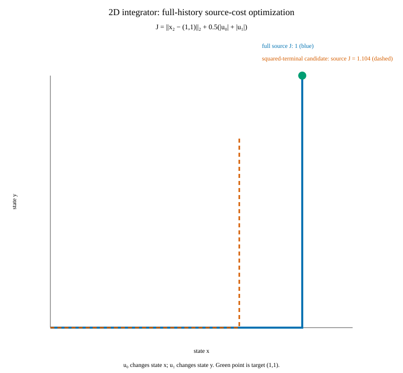

Nominal optimization · native CasADi/SuperSCS result
Optimize the complete history under the authored source cost
The fixture is a two-state, two-step integrator: x₀=(0,0), x₁=x₀+(u₀,0), x₂=x₁+(0,u₁), and u₀,u₁∈[0,1]. The complete canonical decision vector contains all three states and both controls.
The authored objective is J=‖x₂−(1,1)‖₂ + 0.5(|u₀|+|u₁|). For a=1−u₀ and b=1−u₁, its value is 1+√(a²+b²)−(a+b)/2. Since √(a²+b²)≥(a+b)/√2, the unique minimum on this fixture is (u₀,u₁)=(1,1) with J=1.

| Candidate | u₀ | u₁ | Original source J |
|---|---|---|---|
| Native full-history solve | 0.999999996 | 1 | 1 |
| Squared-terminal surrogate minimizer | 0.75 | 0.75 | 1.1035533906 |
Squaring only the terminal norm changes the authored objective. The surrogate selects (0.75,0.75), whose original source cost is 1.1035533906. The native SuperSCS provider instead models each source norm separately over all history coordinates; the checked result independently reevaluates the authored J and the full H-relation.
This provider uses an explicit cold start: it creates a fresh conic function without primal or dual warm-start inputs. CasADi's conic result does not expose internal initialization readbacks; the native receipt records the policy and reason: CasADi conic outputs do not expose internal cold-start primal or dual readbacks. The core still checks the returned complete history against H and recomputes source J.
Saved native result
Provider: csl.conic.superscs.history-cost@1; binary SHA-256: ebaac7d6e873da6e28af3c1359518c3f2ca9f89037865030df14f4fd28e1fb89; maximum full-H violation: 5.23518751e-09.
Actual solver history CSV · Captured native stdout · Source and result receipt · Build log · Offline evidence bundle
Reproduce
cmake -S . -B build/history-optimizer-native-2d -DCSL_ENABLE_CASADI=ON -DCMAKE_BUILD_TYPE=Release
cmake --build build/history-optimizer-native-2d --target history_optimizer_2d_example -j1
build/history-optimizer-native-2d/history_optimizer_2d_example build/history-optimizer-native-2d/outputExample source: 2D native driver at 47465979. Source tree: 47465979bc317ac02b3596c20777827f496e33c1.
This is one two-dimensional functional demonstration with a checked local numerical candidate. The analytic derivation establishes the answer for this fixture only; it makes no global-optimality claim for general nonlinear problems, no nonlinear safety claim, and no performance comparison.